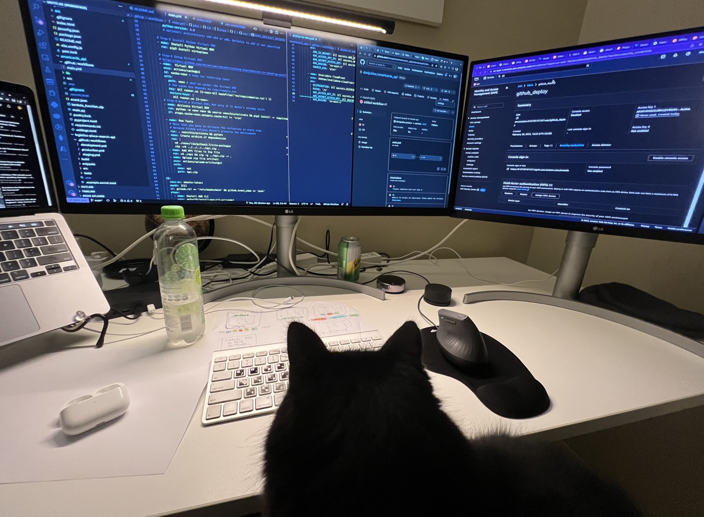
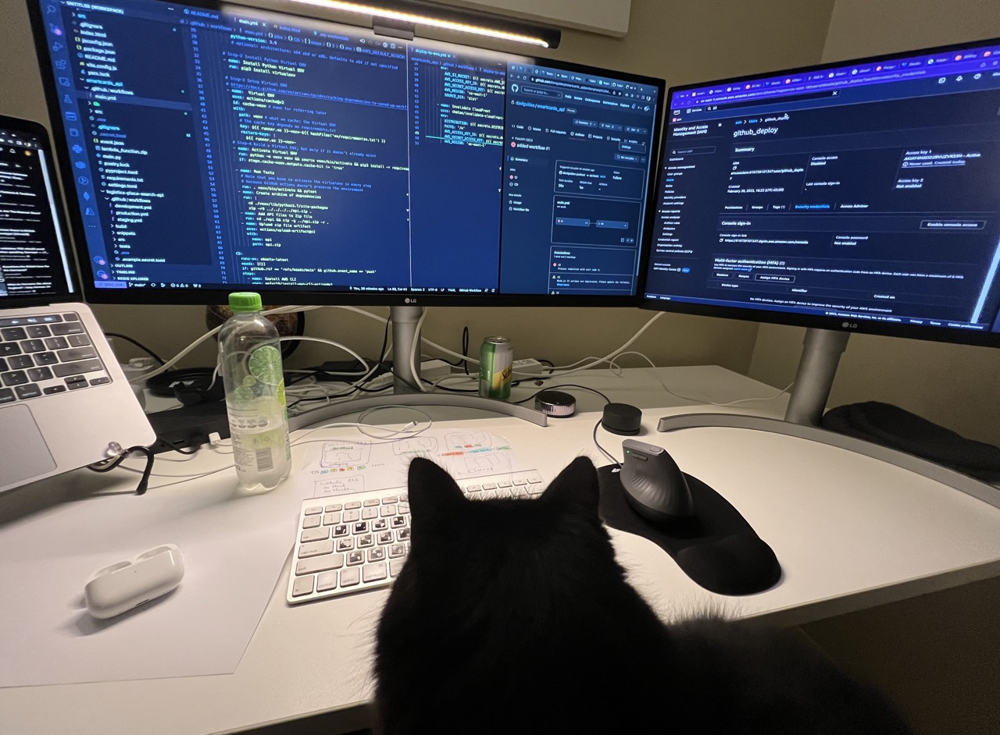

Welcome to my portfolio, where passion and innovation come together to create impactful projects. From AI-powered customer service systems to scalable architectures, each endeavor represents my commitment to excellence. Join me on this exciting journey as we explore the possibilities and pave the way for a future where technology and human ingenuity thrive.
Portifolio
Transformative AI-Powered Customer Service System with Efficient Scalability
Summary: I led the design and deployment of a transformative, AI-powered customer service system, optimizing scalability through a microservices architecture.

Project Overview:
Developed an Autonomous Agent-driven Customer Service System, leveraging the Python Scikit-Learn library for intent classification. This system seamlessly integrated with chat channels and APIs for SMS and WhatsApp to ensure comprehensive customer interaction.
Architecture and System Design:
Led the design and implementation of an intelligent architecture, incorporating domain-specific language for logical flows. The system was distributed into 15 specialized microservices, optimizing scalability and efficiently consuming EC2 resources.
Role and Responsibilities:
As the technical reference within the team, I spearheaded software architecture design and oversaw both front-end and back-end development. In my capacity as Team Lead, I provided mentoring, managed API integrations, and oversaw repository management, code reviews, releases, and production deployment. Employed Kanban methodologies for efficient user story and task management.
Innovation and Technological Integration:
Introduced innovative solutions by integrating cutting-edge technologies like Python, Scikit-Learn, and AWS. Additionally, developed a domain-specific language empowering customer service managers to create their own automated service cases.
Challenges, Problem Solving, and Results:
The project presented a significant challenge with managing the system's resource consumption, specifically the RAM used by the intent classifier algorithm. I addressed this by refining data structures and processing techniques, successfully reducing RAM consumption from over 1GB to marginal MB values per instance. This initiative resulted in significant financial and infrastructure savings.
The optimized system automated over one-third of customer calls, significantly improving response efficiency. Additionally, we introduced a hybrid service that combined manual and automated responses, enhancing the work-life quality for attendants.
Process, Methodology, and Team Collaboration:
Implemented Agile methodologies with Kanban for project management, regular stand-ups, and iteration procedures such as defining user stories and tasks, managing repositories and branches, and conducting code reviews. Our team was distributed, with members working both remotely and on-site. I played a pivotal role in ensuring the team’s alignment in understanding and implementing the domain-specific language for automation.
Deployment and Operations:
Built the application using Python and deployed it on AWS EC2 instances, leveraging a suite of AWS services. Embraced CI/CD practices to automate the build and deployment process.
Learning and Future Considerations:
The project underscored the critical importance of efficient resource management. Even small optimizations led to significant cost and resource savings when scaled across a distributed system. For future projects, I would consider exploring containerization solutions and orchestration tools for enhanced scalability and resource management.
I'm always seeking new challenges that allow me to utilize my experience and skills to create innovative and efficient solutions. I have a passion for programming and continuously update my knowledge to stay aligned with current best practices and technologies.
I'm studying Data Science for Business to build bridges between the business and technical areas. The course covers technology, statistics, and business knowledge.
---
Get in touch
If you have any questions or would like to engage in a conversation, I welcome you to reach out to me. Feel free to send me a message directly, and I'll be happy to connect with you.
Feel free to visit my LinkedIn profile at @daviguides to connect and learn more about my professional journey.
You can also visit my GitHub profile at GitHub Profile: @daviguides
I look forward to hearing from you and discussing exciting opportunities or answering any queries you may have.
---
More About Me
I am a very curious and proactive professional with a great capacity to absorb new knowledge. I always seek to think creatively, practically, and systematically to achieve the most relevant results for the business. I always ask myself: What pain are we addressing here? How much value and differentiation will this add to the company? If the answer is positive, I try to understand which part of the whole will bring the greatest impact. Whether alone or in a group, it is a pleasure to accomplish and see things happen.

As a neurodivergent person with Giftedness, my hyperfocus and commitment are focused on continuous learning and improvement, respecting both my uncommon abilities, such as divergent deep thinking, whole-detail perspective, integration of opposing ideas and perspectives, among others, and the limitations of my condition, such as hyperesthesia and hypersensitivities, among others.
I thrive in projects that offer constant growth opportunities and challenges, particularly those with a data-driven, pragmatic, ethical, and pluralistic decision-making approach.
Pronouns: He/Him 🌈
Fun fact: I have a beautiful black cat who sometimes shows up to say hello in meetings or do some pair programming with me.
 

Other curiosities: once every 15 days, my friend Ana comes over and we do a home co-working session.
Also, once a month, Ana and I have a Spa Saturday, dedicated to being a day of relaxation, with meditation, QiGong and yoga practices, reiki, and more. It's important for us to reduce stress levels and keep our minds fresh and ready for action.